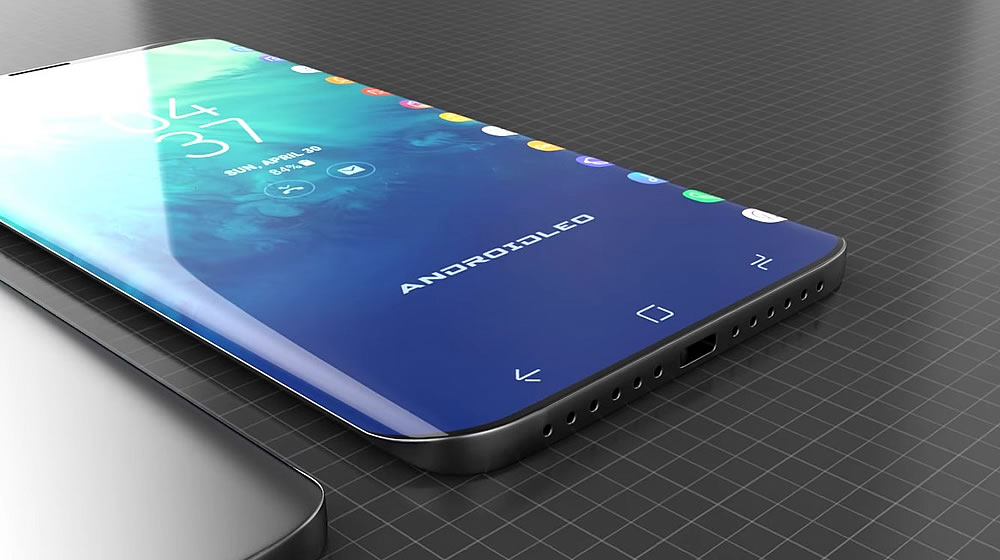

TODO y MAS del Nuevo S10!
El Samsung Galaxy S10 cuenta con un diseño con esquinas redondeadas y unos marcos muy reducidos. Estamos ante un terminal que alberga una pantalla Dynamic AMOLED con un único orificio en la parte superior derecha para la cámara frontal. La parte trasera es de cristal y cuenta con un módulo de tres cámaras y flash LED dispuesto de forma horizontal. No tiene sensor dactilar capacitado.Su pantalla es un panel Dynamic AMOLED que cuenta con una resolución QHD+ debido a su formato 19:9. El panel es de 6,1 pulgadas y la densidad de píxeles es de 550 píxeles por pulgada, una densidad de píxeles que lo coloca en la gama top.
Cuenta con Android 9.0 Pie, además de la interfaz One UI de Samsung que permite controlar el móvil de forma más sencilla con una mano a la vez que ahorra batería gracias al modo oscuro. Samsung ha desarrollado su nueva versión de Exynos, el SoC que este año ‘’adelgaza’’ hasta los 8 nanómetros e incorpora NPU para las labores de la inteligencia artificial, que se aplican a la cámara. Al procesador, de 8 núcleos con dos de alta potencia, dos de menor consumo y cuatro para las tareas menos pesadas, se le suman 8 GB de Memoria RAM. La GPU es la Mali-G76 MP12.Cuenta con triple cámara trasera. Se trata de un módulo compuesto por una cámara de gran angular de 16 megapixeles, la cámara Dual Pixel de Samsung de 12 megapixeles con estabilización óptica y apertura f/1.5 - f/2.4 y un teleobjetivo de 12 megapixeles, también con estabilización óptica. En la parte frontal nos encontramos la cámara Dua Pixel de 10 megapixeles con apertura f/1.9 y tienetiene USB Tipo-C 3.1 para ofrecer la carga rápida y conexión a redes Wi-Fi 802.11 a/b/g/n/ac/ax, Bluetooth 5.0 y conexión a GPS y GLONASS, además de a BDS y GALILEO para ofrecer una mejor navegación.
| Pantalla | 6,1 pulgadas, tipo SuperAMOLED, con formato 19:9 y resolución de 3.040 x 1440 píxeles. |
| Memoria | 6 GB-8 GB de RAM. |
| Camara trasera | Doble cámara trasera de 12 MP y 16 MP (principal y gran angular). |
| Camara frontal | 10 MP con grabación de vídeo en 4K. |
| Bateria | 3.100 mAh. |
| Sistema Operativo | Android P, con la interfaz One UI. |
| Certificacion | IP68 (resistente al polvo y al agua). |